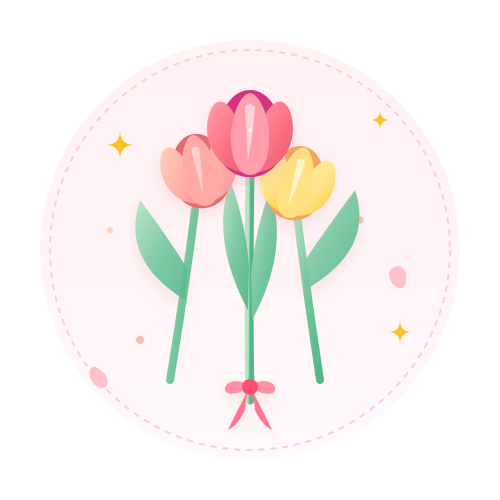

Keanggunan Bunga Tulip 🌷
Bunga tulip memiliki karakteristik yang bersahaja: bentuk kelopaknya teratur, tumbuh tegak, dan memiliki pesona yang tenang. Bagi saya, tulip menggambarkan proses bertumbuh secara bertahap dan konsisten dalam menempuh pendidikan maupun mengembangkan minat pribadi.